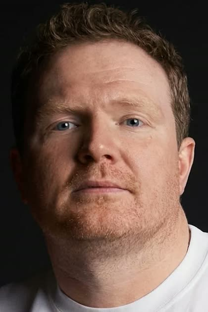
Антон Маслов
Режиссёр фильмов «Последний богатырь», «Последний богатырь. Колобок», «Поехавшая», сериалов «Вампиры средней полосы», «ИП Пирогова», «Отель Элеон» и других
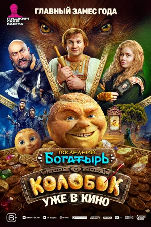
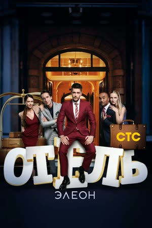
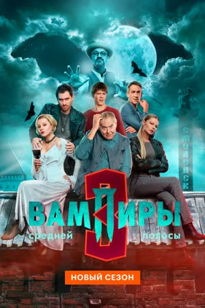
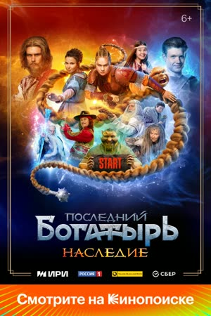
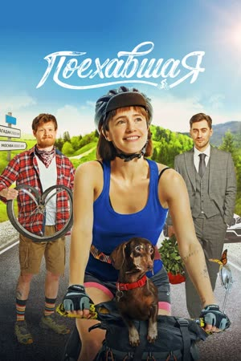
creAIte
С нуля до готового ролика за 7 дней
Старт 19 сентября
Заглянуть внутрьЛучших забираем на работу в нейропродакшн FilmWay AI
и другими брендами
Предзапись на интенсив7 дней вместо 2–3 месяцев, как у большинства школ
Один инструмент вместо десятка подписок
Реальный клиент — обучение на настоящем заказе и крупный кейс в портфолио
Ролик выйдет на ресурсах Okko с охватами в несколько миллионов человек
Новый пайплайн работы — новый подход к работе с нейросетями и производству коммерческих проектов. Прямо сейчас по нему идут проекты для:
Фонбет · Любятово · Азимут · Авито и другие крупнейшие бренды
Трудоустройство — лучших студентов забираем на работу в продакшн. Мы растём и ищем людей в команду
Фидбэк от топ-режиссёров рекламы и кино — дадут обратную связь и могут позвать понравившихся студентов к себе на работу или проект
Среди наших жюри

Антон Маслов
Режиссёр фильмов «Последний богатырь», «Последний богатырь. Колобок», «Поехавшая», сериалов «Вампиры средней полосы», «ИП Пирогова», «Отель Элеон» и других





Владимир Беседин
Режиссёр фильмов «Майор Гром» и «Левша»
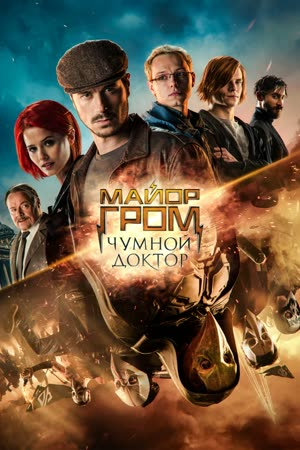
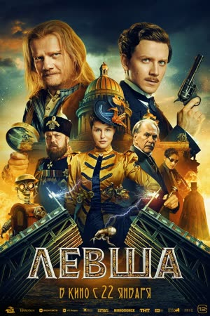
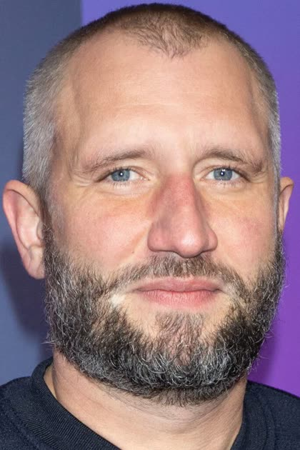
Юрий Быков
Режиссёр «Метод», «Метод 3», «Дурак»
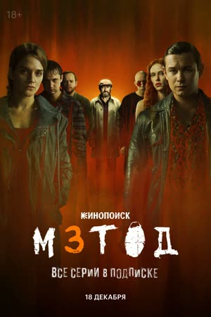
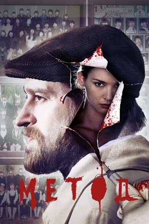
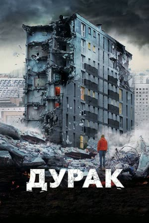
Цель дня: дать общее понимание процесса, возможностей Seedance, его ограничений и экономики (как не потратить всё сразу). А также запустить разработку финального проекта.
К концу занятия будет понимание этапов, которые нужно пройти, чтобы получить готовый ролик.
Часть 1
Часть 2: знакомство с инструментом
Цель дня: научиться работать в фото-нейросетях, разработать визуальный мир ролика, создать персонажа, локации, стиль проекта и несколько ключевых фотокадров.
Часть 1: теория — фото как основа проекта
Часть 2: практика
Итог дня
Цель дня: освоить все форматы работы в Seedance 2.5, понять преимущества и недостатки каждого из них и начать генерацию видеокадров для финального ролика.
Часть 1: обзор форматов работы в Seedance
Часть 2: практика
Итог дня
Формат дня: мастерская с Эраджем Нидоевым.
Цель дня: разобрать первые генерации, выявить ошибки и доработать материал.
Разбор материала
Практика
Исправление ошибок по советам преподавателя.
Итог дня
Цель дня: дать понимание, как из отдельных генераций собрать цельный ролик и как звук помогает скрыть недочёты материала.
Часть 1: постпродакшн ИИ-ролика
Часть 2: музыка и звук
Часть 3: практика
Написание трека, генерация голоса, первый монтаж своего ролика и его анализ после получения рафката.
Итог дня
Есть базовое понимание, как происходит пост-продакшн ИИ-ролика: монтаж, написание музыки, создание озвучки и шумов, а также первый черновой монтаж и чёткий список кадров, которые нужно доработать или догенерировать перед финальным просмотром.
Цель дня: получить режиссёрский разбор от Эраджа Нидоева, выявить критические проблемы роликов и доработать материал.
Формат дня
День строится как мастерская — профессиональный просмотр рабочих версий: показ роликов, разбор проблем и ошибок, обратная связь от Эраджа вместе с пониманием, с помощью каких инструментов можно исправить ошибки.
Итог дня
У всех есть почти готовая версия ролика, список правок и понимание, что необходимо завершить перед показом экспертам.
Цель: показать финальные ролики экспертам, получить профессиональную обратную связь, определить моменты для самостоятельной доработки и упаковать результат как портфолио-кейс.
Часть 1: финальная подготовка
Часть 2: показ экспертам
Часть 3: завершение программы
Итог дня
У участников есть:
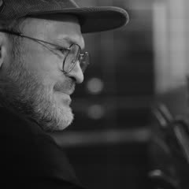
Мы переживаем грандиозную смену эпох — сравнимую с переходом от немого кино к звуковому. Не хочется остаться за бортом
Спасибо команде и особенно Дмитрию за то, что помогли разобраться, как со всем этим работать
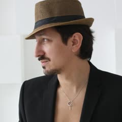
Пришёл, чтобы сэкономить время и не разбираться самому, а получить знания от людей, что делают реальную работу
Отличная практика
Я увидел пайплайн, понял логику создания цельного продукта: от раскадровки до финального проекта
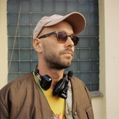
Очень понравился курс. Классная команда! Ребята дают много полезной информации
Мне как человеку визуальной профессии было очень интересно узнать много нового для себя
Хорошая база для работы с ИИ
За месяц интенсива я реально пересмотрел подход к созданию профессиональных роликов — начал сильнее работать с деталями, цветом, референсами
А за три месяца в целом произошёл просто нереальный скачок: сейчас я считаю, что я один из топов, как минимум, в своём городе, и знаю, как работать с нейронками
Это было мощно и круто
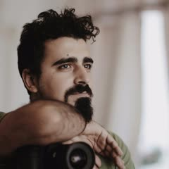
Курс не просто сортировка знаний из ютуба, а реальный боевой лагерь, где учишься на реальных задачах и создаёшь реальный результат
Ролик, сделанный нами, собрал кучу наград на различных профильных фестивалях
Я пришла с режиссёрским образованием ВГИК, но вообще без опыта работы в нейронках и без опыта работы в рекламе
За курс Эрадж и преподаватели научили делать тритменты, создавать классные ролики и дали полное понимание работы в нейронке — на опыте и на практике
Курс и сам Эрадж помогли мне войти в индустрию рекламы и получить первые кейсы
И ещё во время обучения на курсе я получила награду на фестивале рекламных роликов G8 от Beeline
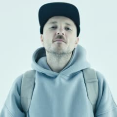
Курс в школе creAIte даёт полное пошаговое руководство в создании видео с помощью AI
Новички получают не только техническую информацию, но и базу по драматургии, монтажу, звуку и арт-дирекшену, а профи с опытом — современный инструмент, который позволяет быть ещё эффективнее в рабочих задачах
На рынке ИИ десятки курсов и школ, но creAIte даёт вам возможность проявить себя и получить предложение о сотрудничестве, предлагая работу над рекламными и кинопроектами в большой команде специалистов
По-моему, выбор очевиден
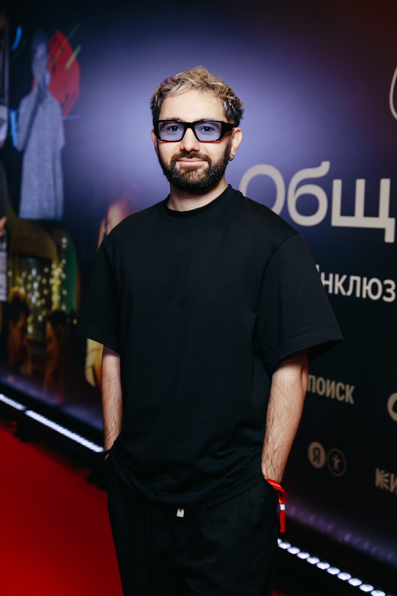
Режиссёр · Креативный директор · AI Director
10+ лет в реальном кино и съёмке рекламы на площадке. Работал с крупнейшими российскими и мировыми брендами. Академическая режиссёрская база — перенесена в ИИ.
Уникальная смесь: академические знания для кинематографичной картинки + понимание клиентов и их задач + высочайший уровень реализма в ИИ-контенте.
// Brands
листайте →
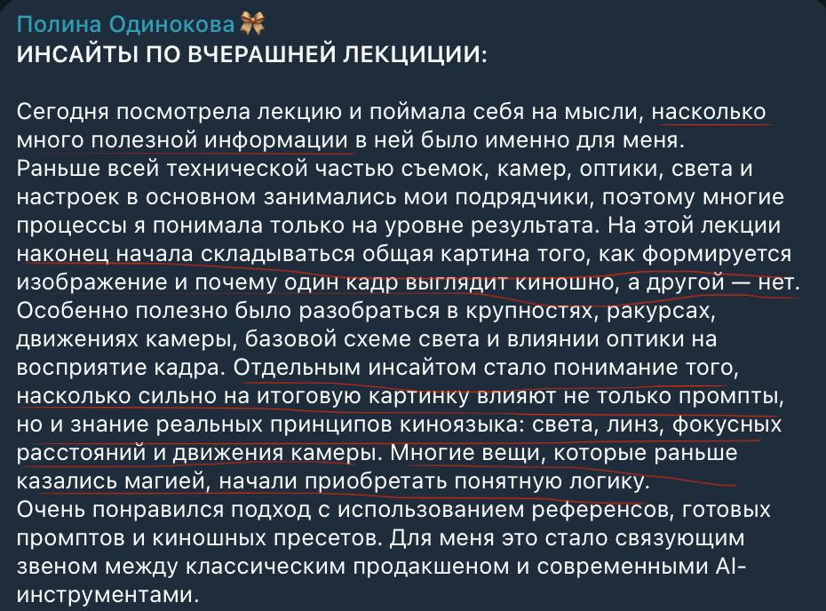
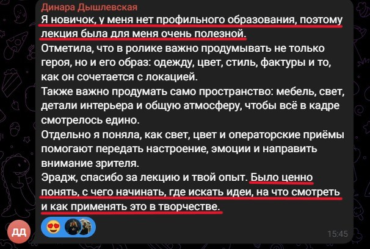
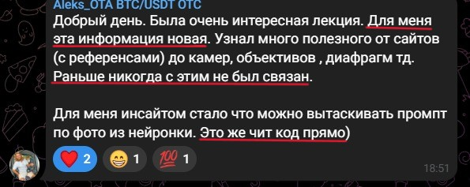
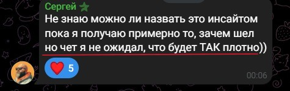
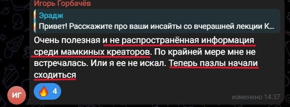
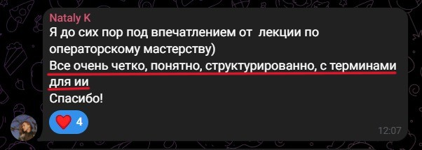
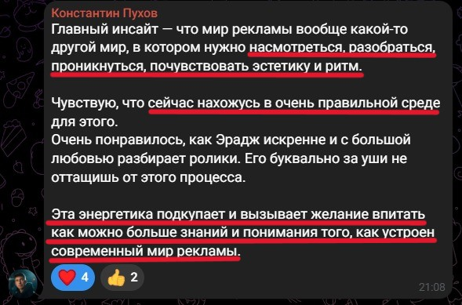
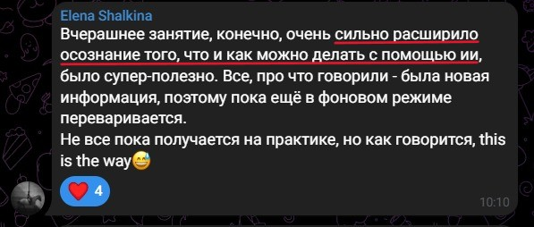
Да, оплату можно разбить на части — детали уточняются при записи.
Нет. Живые лекции с преподавателем — вопросы задаёшь и получаешь ответы в реальном времени. Доступ к материалам остаётся навсегда.
Куратор помогает уложиться в сроки, материалы сохраняются. Но заниматься нужно ежедневно — формат экспресс, поблажек на «забил неделю» не будет.
Лучших студентов берём в продакшн по результатам защиты — это зависит от качества твоей работы, а не от факта оплаты.